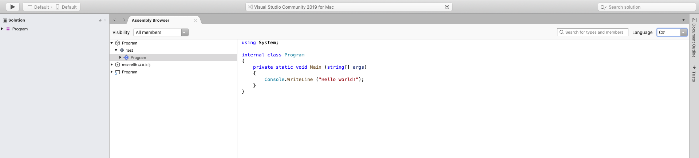

Decode .EXE to get intermediate language (IL)code and C# code using Visual Studio on OSX/MAC
Instructions :
- 1- Run Visual Studio and click on files > open
-
To create a visual studio console app project using c# visit : Create console app!
To create .EXE file using terminal visit : Generate .EXE!
- 2- Choose the .EXE file you wish to decode
- 3- You will see the following screen having Assembly Browser opened
- 4- Click from assembly browser's side dropdown menu program>test>program, make sure visibility is set to all members, and language is IL or CS from the dropdown, located at header toolbar
- 5- You can generate C# code from the language selector dropdown. Just select C#
- 6- The system will generate C# code for you from your .EXE file
- 
×